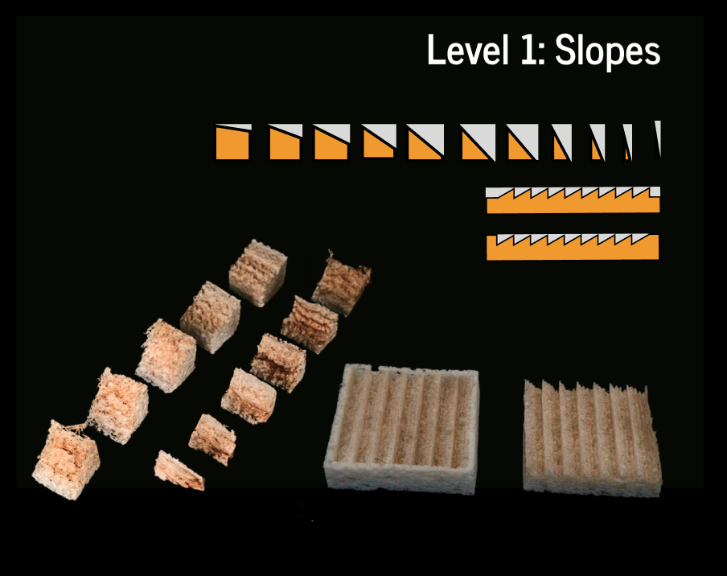

Level 1: Slopes
Level 1: Slopes uses variations in engraving depth to generate local height differences and inclined surfaces. It demonstrates the direct relationship between laser input and surface topography and provides a basis for subsequent geometric control. The modeling examples below show how slope units can be arranged into larger patterns.

Level 1: Slopes
Part 1: Creating a Single Surface Unit
- Create a Cube Model: Begin by building a basic cube model in your design software.
- Define the Slope Angle: Select one edge on the top face of the cube to define an angle for the slope.
- Cut the Slope: Using the defined angle, make a cut along the selected edge of the cube to create the sloped surface.
- Final Unit Model: After the cut is complete, the resulting shape will be a single surface unit with the desired slope, which can be used in the larger pattern design.
Part 2: Creating the Zigzag Pattern
- Define the Distance Between Units: Set a fixed distance for how far apart each sloped unit will be placed along the pattern.
- Design a Flat Rectangle: Start with a flat rectangular shape, where the cross-section is square, and the length and width are defined based on your pattern needs.
- Perform Repeated Cuts: At regular intervals along the rectangle, make angled cuts, each at a consistent depth. These cuts should be made to a certain depth, roughly halfway through the material.
- Final Zigzag Model: Once the cuts are made, the resulting shape will be a zigzag pattern, formed by the alternating angled cuts along the flat surface.